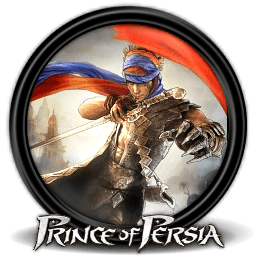
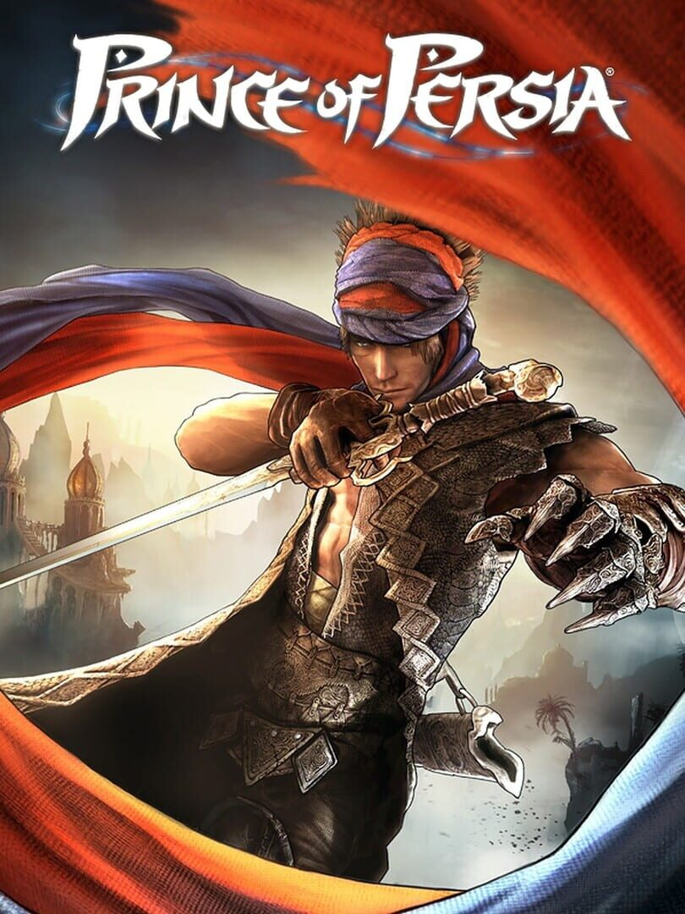

Prince of Persia |
|
| Tiempo de juego | 15m 13s |
| Última actividad | 11/11/2025 9:13:36 |
| Añadido | 27/7/2025 1:47:20 |
| Modificado | 10/12/2025 13:51:20 |
| Estado de finalización | Jugado |
| Librería | Playnite |
| Fuente | |
| Plataforma | PC (Windows) |
| Fecha de lanzamiento | 2/12/2008 |
| Puntuación de la Comunidad | 77 |
| Puntuación de la Crítica | 84 |
| Puntuación de usuario | |
| Género | Adventure Puzzle |
| Desarrollador | Ubisoft Montreal |
| Editor | Ubisoft Entertainment |
| Característica | Single Player |
| Enlaces | Steam GOG |
| Tag | |
Este es el capítulo más artístico y divisivo de la saga. Ubisoft Montreal decidió reiniciar la historia y nos entregó un juego que parece una pintura o una película de animación de la puta madre gracias a su espectacular estilo gráfico "cel-shading". Visualmente, es una hermosura que no envejeció un solo día.
Pero acá vino la mecánica que partió las aguas y generó el debate: en este juego, no podés morir. Si te caés al vacío o un enemigo te va a liquidar, tu compañera Elika te salva mágicamente en el último segundo y te devuelve a la última plataforma segura. Muchos lo odiaron, dijeron que le quitaba el desafío. Otros lo vimos como una decisión de diseño genial que prioriza la fluidez y la narrativa: la aventura nunca se corta con una pantalla de "Game Over", fluye como una película.
El plataformeo es una danza. Es pura acrobacia elegante y secuencias espectaculares donde encadenás saltos, corridas por la pared y deslizamientos. El combate también cambió, enfocándose en duelos cinemáticos uno contra uno en lugar de peleas contra multitudes. Todo el juego se siente como una coreografía perfecta.
A medida que avanzás y "sanás" las tierras corrompidas, el mundo pasa del blanco y negro a una explosión de color y vida, lo cual es una recompensa visual increíble.
No es un juego para el que busca un desafío hardcore. Es una experiencia audiovisual, un cuento de hadas interactivo con un arte descomunal y una de las mejores duplas de protagonistas de la saga. Una joya para los que valoran la belleza y el viaje por sobre la dificultad.